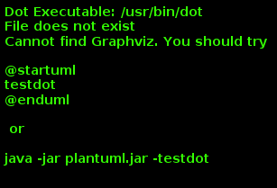

docToolchain
: docToolchain
Table of Contents
docToolchain
Day 00: groovy
Hello World
This solution is written in Groovy.
I will use my helper to read the input from a file:
String readInput(fileName) {
new File(fileName).text
}First Star
The solutions shall print out a greeting.
I will wrap this in a simple helloWorld method.
String helloWorld() {
def whoShallBeGreeted = readInput("input.txt") (1)
"Hello ${whoShallBeGreeted}"
}
println "Solution: " + helloWorld()| 1 | this is where I call the helper method to read my input |

Second Star
There is no second star.